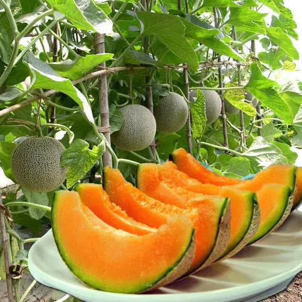
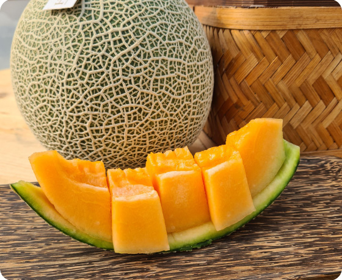
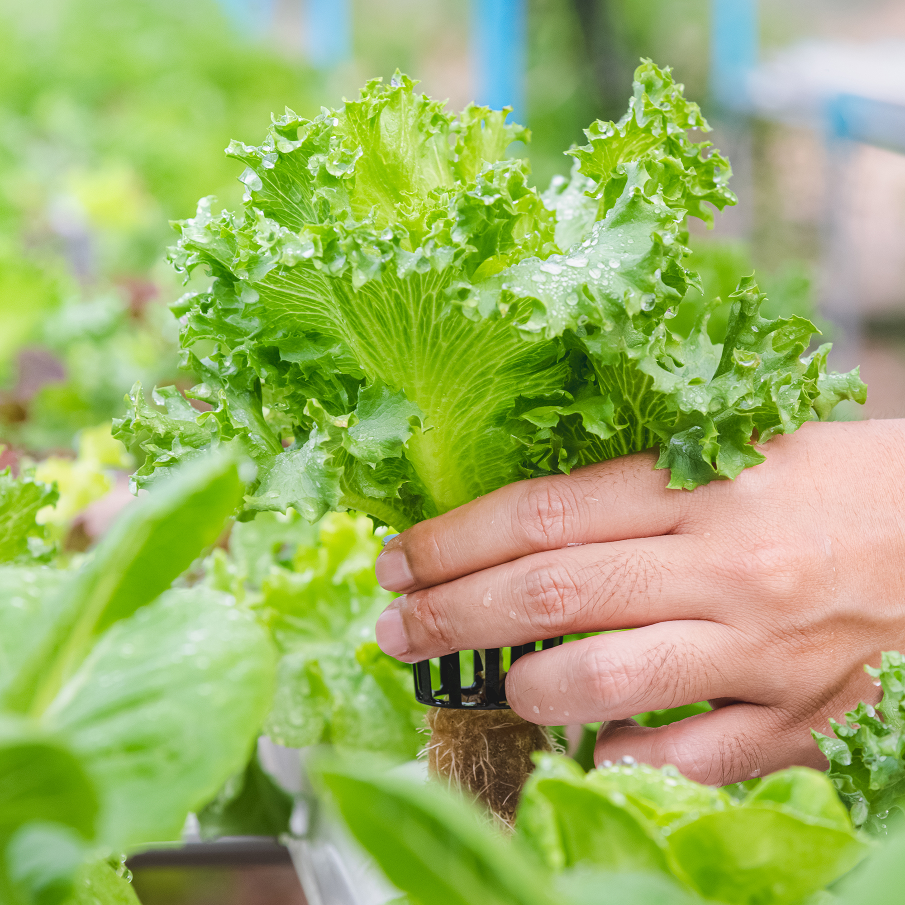
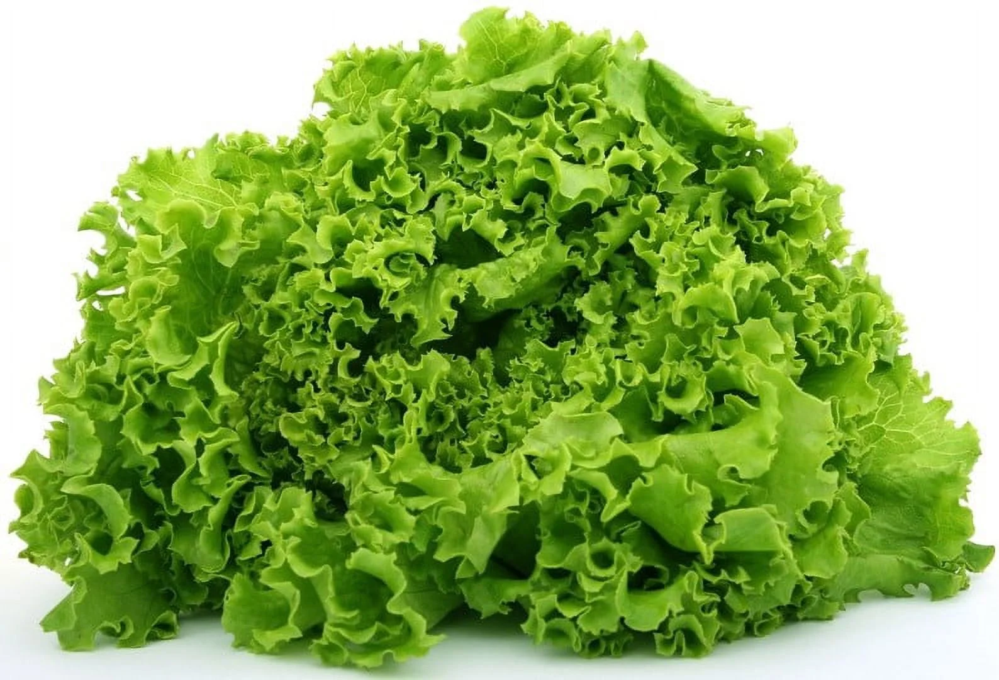
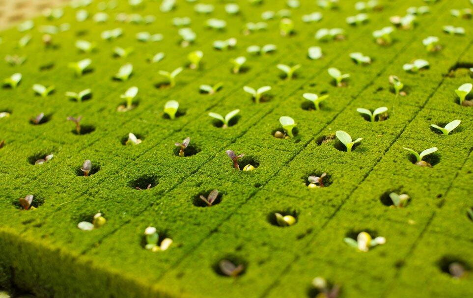
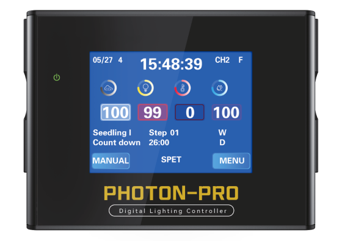
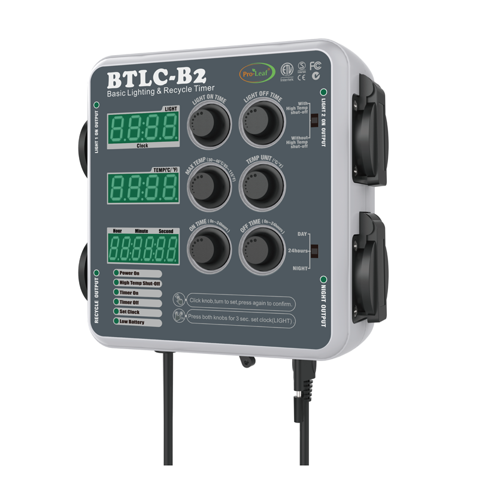
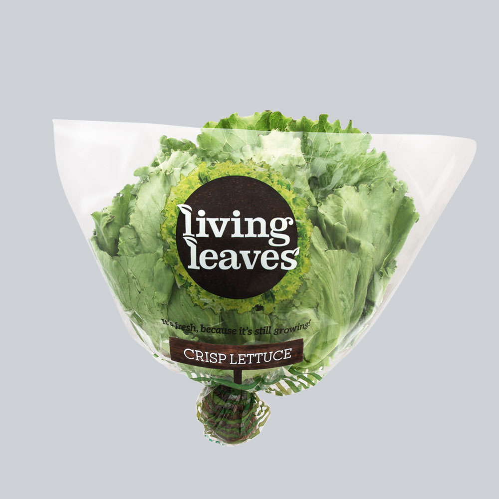

Hami Melon Premium Hidroponik
Hami melon premium berkualitas ekspor yang dibudidayakan menggunakan teknologi hidroponik modern. Dengan tingkat kemanisan optimal dan tekstur yang sempurna, melon kami memenuhi standar internasional untuk pasar ekspor.
Keunggulan Produk:
- Tingkat kemanisan konsisten 14-16 Brix
- Bebas pestisida dengan sistem hidroponik
- Ukuran seragam 1.5-2 kg per buah
- Daya tahan simpan hingga 2 minggu
- Standar kualitas ekspor
- Dipanen pada tingkat kematangan optimal
Spesifikasi Teknis:
Selada Hidroponik Segar
Sayuran selada hidroponik segar yang dipanen langsung dari greenhouse otomatis. Dengan kandungan nutrisi tinggi dan tekstur renyah, selada kami ideal untuk konsumsi langsung maupun olahan kuliner premium.
Keunggulan Produk:
- Kandungan vitamin C dan K tinggi
- Tekstur renyah dan segar
- Dipanen pagi hari untuk kesegaran maksimal
- Kemasan higienis food grade
- Tersedia berbagai varietas
Spesifikasi Teknis:





Ikan Nila Sistem Bioflok
Lini perikanan baru Cirebon Smart Farm. Ikan nila dipelihara di kolam terpal bundar dengan sistem bioflok: bakteri di dalam air mengubah limbah menjadi pakan alami, sehingga kolam bisa diisi padat tanpa perlu penggantian air rutin.
Yang Kami Siapkan:
- Padat tebar 100-150 ekor per meter kubik
- Aerasi 24 jam dengan listrik cadangan
- Parameter air dicatat setiap pagi dan sore
- Kolam terpal, bukan kolam tanah, sehingga bebas bau lumpur
- Buangan kolam dialirkan ke bedeng sayur sebagai akuaponik
Teknologi Produksi Kami
Sistem hidroponik modern yang mendukung kualitas produk premium
Persiapan Bibit Unggul
Seleksi benih berkualitas tinggi dengan daya kecambah optimal dalam media steril

Sistem Nutrisi Otomatis
Pemberian nutrisi presisi dengan sistem dosing otomatis dan monitoring pH real-time. Takarannya bisa Anda hitung sendiri lewat kalkulator nutrisi AB Mix kami.

Kontrol Lingkungan
Greenhouse dengan kontrol suhu, kelembaban, dan sirkulasi udara otomatis

Panen & Packaging
Panen pada waktu optimal dengan handling higienis dan kemasan food grade

Harga Sayur Hidroponik dan Cara Kami Menghitungnya
Terbuka, supaya Anda bisa membandingkan sebelum memesan
Harga sayur hidroponik hampir selalu lebih tinggi daripada sayur pasar biasa, dan itu wajar. Yang sering membingungkan pembeli adalah satuannya. Pasar menjual selada per ikat, supermarket menjual per kemasan, sedangkan kebun menjual per kilogram. Tiga angka yang berbeda untuk barang yang sama.
| Produk | Harga per kg | Satuan jual lain | Ketersediaan |
|---|---|---|---|
| Selada hidroponik | Rp 25.000 - Rp 40.000 | Rp 5.000 - Rp 10.000 per ikat (200 - 250 g) | Panen harian |
| Hami melon premium | Rp 45.000 - Rp 65.000 | Rp 68.000 - Rp 163.000 per buah (1,5 - 2,5 kg) | Musiman, ikuti jadwal tanam |
| Ikan nila bioflok | Rp 25.000 - Rp 35.000 (perkiraan) | Dijual per kg hidup | Belum tersedia, daftar tunggu dibuka |
Kenapa Lebih Mahal daripada Sayur Biasa
Selada konvensional di pasar tradisional biasanya berada di kisaran Rp 10.000 sampai Rp 20.000 per kilogram. Selisihnya bukan karena label hidroponik, melainkan karena biaya yang benar-benar dikeluarkan. Greenhouse, pompa, dan listrik berjalan setiap hari. Nutrisi ditakar dan diukur, bukan ditabur. Panen dilakukan mendekati waktu kirim, bukan ditumpuk berhari-hari.
Yang Anda dapat sebagai gantinya adalah daun yang bersih tanpa perlu dicuci berulang, tanpa residu pestisida karena tidak ada tanah dan hama tanah, umur simpan lebih panjang di lemari es, dan bobot bersih yang lebih tinggi karena tidak ada tanah yang ikut tertimbang. Untuk rumah makan, umur simpan itulah yang biasanya paling terasa, sebab susut barang turun cukup jauh.
Pemesanan Rutin dan Jumlah Besar
Rumah makan, katering, dan toko sayur yang memesan rutin mendapat harga berbeda dari pembelian eceran, karena jadwal panen bisa kami rencanakan lebih awal. Sampaikan perkiraan kebutuhan per minggu melalui halaman kontak, dan kami balas dengan penawaran beserta jadwal kirimnya.
Pertanyaan Seputar Harga dan Pemesanan
Yang paling sering ditanyakan pembeli baru
Berapa harga selada hidroponik per kg?
Di kebun kami, selada hidroponik berada di kisaran Rp 25.000 sampai Rp 40.000 per kilogram, bergantung jenis selada dan jumlah pesanan. Romaine dan selada merah biasanya di batas atas, sedangkan selada keriting hijau di batas bawah.
Harga di supermarket umumnya lebih tinggi karena sudah termasuk kemasan, distribusi, dan margin gerai. Harga pasar juga bergerak mengikuti musim, dan biasanya naik saat musim hujan panjang ketika pasokan dari dataran tinggi terganggu.
Berapa harga selada hidroponik per ikat?
Satu ikat selada hidroponik umumnya berbobot 200 sampai 250 gram, sehingga setara Rp 5.000 sampai Rp 10.000 per ikat pada kisaran harga kami. Perlu diingat bahwa ukuran ikat tidak ada standarnya dan berbeda antarpenjual.
Kalau Anda membandingkan harga antartempat, selalu tanyakan bobot per ikat lebih dulu. Ikat yang tampak murah sering kali hanya lebih kecil.
Kenapa harga sayur hidroponik lebih mahal daripada sayur biasa?
Selada konvensional di pasar tradisional biasanya Rp 10.000 sampai Rp 20.000 per kilogram, kira-kira setengah harga hidroponik. Selisihnya datang dari biaya nyata, yaitu greenhouse, pompa dan listrik yang berjalan setiap hari, nutrisi yang ditakar dan diukur, serta panen yang dilakukan mendekati waktu kirim.
Sebagai gantinya, daunnya bersih tanpa perlu dicuci berulang, tidak ada residu pestisida tanah, umur simpannya lebih panjang di lemari es, dan bobot bersihnya lebih tinggi karena tidak ada tanah yang ikut tertimbang. Untuk usaha kuliner, umur simpan itu yang paling terasa karena susut barang menurun.
Berapa harga hami melon hidroponik per kg?
Hami melon kami berada di kisaran Rp 45.000 sampai Rp 65.000 per kilogram, dengan bobot per buah 1,5 sampai 2,5 kilogram. Melon dijual utuh per buah, bukan dipotong, supaya kesegarannya bertahan sampai di tangan pembeli.
Melon bersifat musiman dan mengikuti jadwal tanam di greenhouse, jadi tidak selalu tersedia sepanjang tahun. Hubungi kami untuk menanyakan jadwal panen terdekat.
Apakah bisa memesan dalam jumlah besar untuk rumah makan atau katering?
Bisa. Pemesanan rutin dengan jumlah tetap per minggu mendapat harga berbeda dari eceran, karena jadwal tanam dan panen bisa kami rencanakan lebih awal untuk Anda.
Sampaikan perkiraan kebutuhan mingguan, jenis sayur, dan hari kirim yang Anda inginkan melalui halaman kontak. Kami balas dengan penawaran beserta jadwal kirim yang bisa dipenuhi.
Melayani pengiriman ke daerah mana saja?
Cirebon dan sekitarnya kami layani langsung, meliputi Kota Cirebon, Kabupaten Cirebon, Kuningan, Majalengka, dan Indramayu. Untuk sayur daun, jangkauan kirim memang dibatasi supaya kesegarannya terjaga sampai tujuan.
Di luar wilayah itu, silakan tetap hubungi kami. Untuk pesanan besar atau produk yang lebih tahan seperti melon, pengiriman ke luar kota masih memungkinkan diatur.
Jaminan Kualitas
Komitmen kami terhadap standar kualitas tertinggi
Sertifikasi Organik
Produk bersertifikat organik dengan proses budidaya bebas pestisida dan bahan kimia berbahaya
Lab Testing
Setiap batch produk melalui pengujian laboratorium untuk memastikan kualitas dan keamanan
Cold Chain
Sistem rantai dingin dari panen hingga pengiriman untuk menjaga kesegaran optimal
ISO Standards
Menerapkan standar ISO untuk proses produksi dan manajemen kualitas yang konsisten
Tertarik dengan Produk Premium Kami?
Hubungi kami sekarang untuk mendapatkan penawaran terbaik dan informasi ketersediaan produk